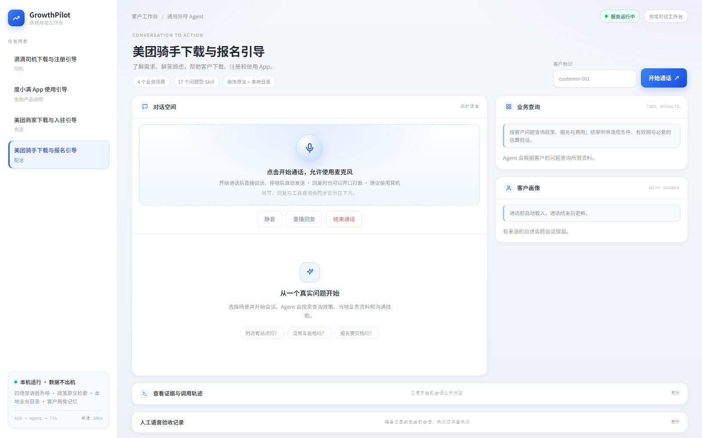
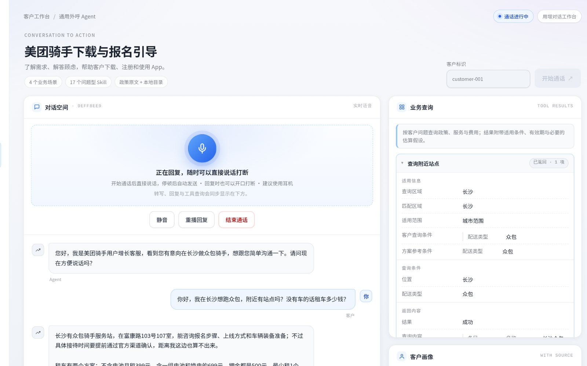
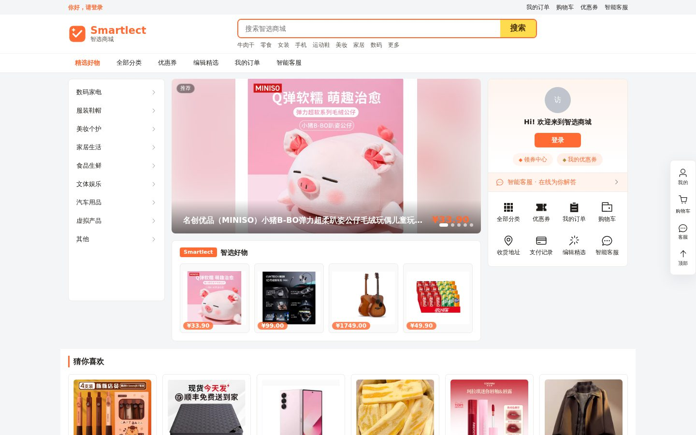
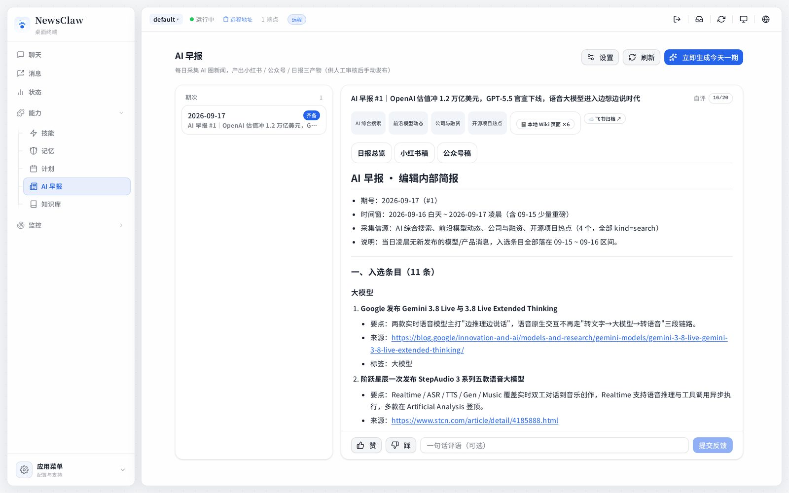
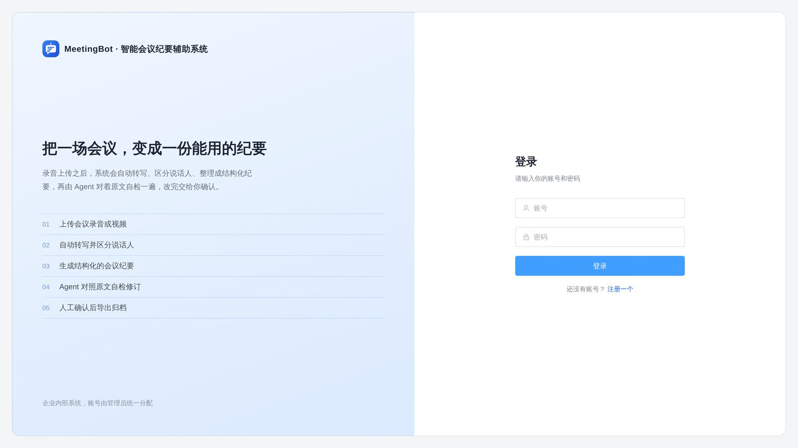
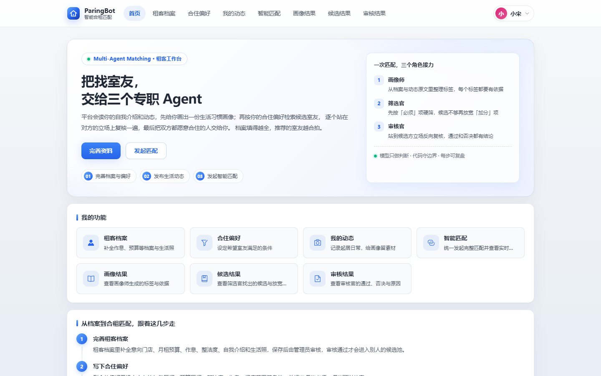
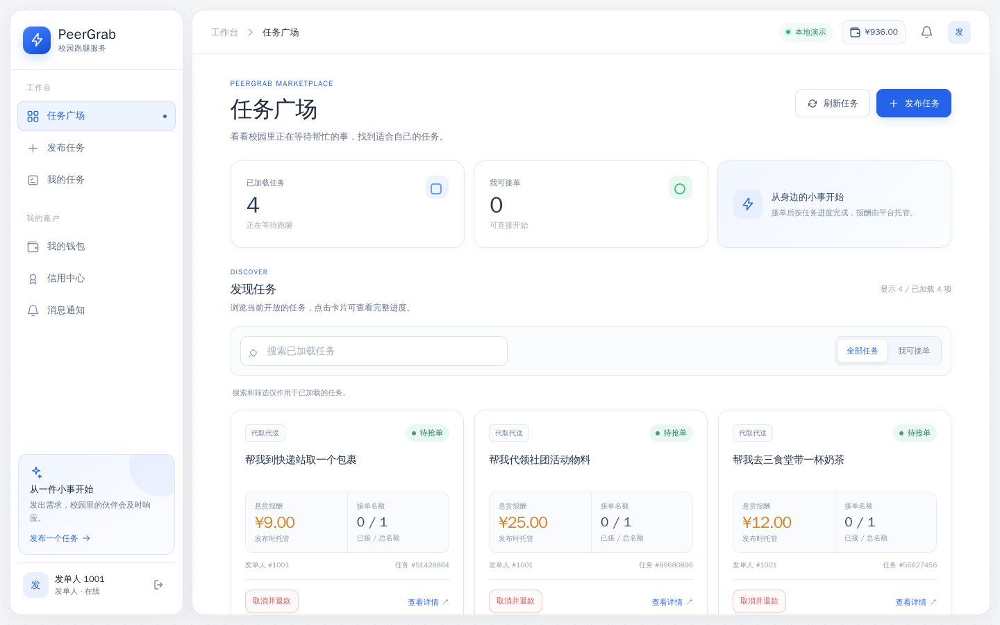

答案有依据
先查资料再回答，尽量把原文、来源和适用条件一起给出来。
AI 应用 · 后端开发
我做 AI 应用，也做支撑它的后端系统。比起“看起来会聊天”， 我更在意它能不能查到准确资料、按规则办事，以及出错时有没有兜底。

01 关于我
我是 Littlesongxx，在哈尔滨工业大学读书，主要在做 AI 应用和后端系统。
我喜欢把一个想法做成能真正跑起来的产品：从前端交互、Agent 工作流， 到数据库、部署和评测。不是停在 Demo，而是尽量让它能被别人使用、也能被自己复现。
做 AI 产品时，我反复问一个问题：如果模型错了怎么办？ 我的答案通常写在系统里：回答带出处、关键动作要确认、任务可以恢复、效果可以被评测。
先查资料再回答，尽量把原文、来源和适用条件一起给出来。
模型可以给建议，关键步骤交给权限、审批或人工确认。
用测试、评测和可回放的记录，判断它到底靠不靠谱。
02 项目
从语音 Agent 到交易平台，都是我自己从 0 到 1 做过的项目。 6 个项目

会打电话的 AI 业务顾问：听懂客户的问题，查政策、费用和地点，再引导下载注册。


每天自动读新闻、挑重点、写成一份早报；资料留在本地，周末还会复盘改进。

把一场会议的录音，变成一份能直接用的纪要：谁说了什么、决定了什么、下一步谁做什么。

找合租室友的 AI 助手：先了解双方的生活习惯和预算，再筛候选、双向确认，最后给出有依据的推荐。

03 更多项目